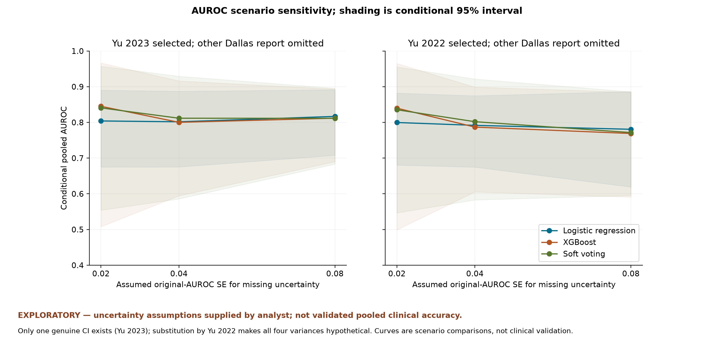
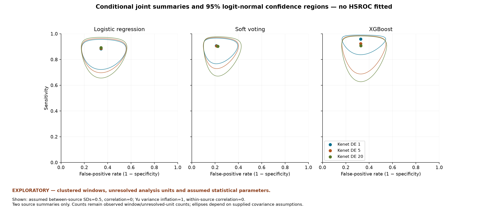
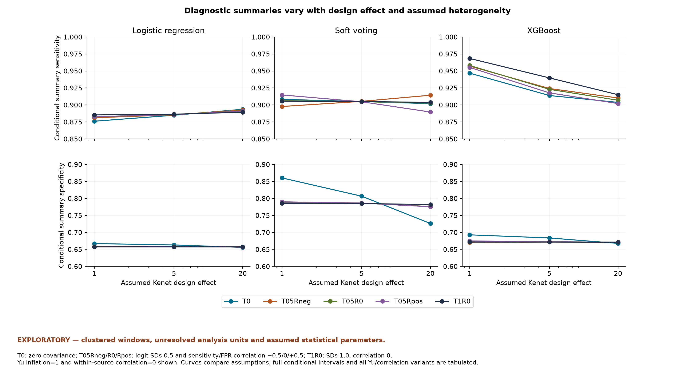

The supplied extraction is authoritative for this task and has not been independently verified against original papers. No new studies, external confidence intervals, author correspondence or patient-level records were consulted. Reported source values are unchanged. Original confirmatory feasibility conclusions and descriptive outputs are preserved. The numbers here are conditional pooled calculations, not the primary evidence-supported findings or established clinical accuracy.
The team requested numerical exploration despite the prior confirmatory feasibility blockers. This continuation executes explicit additional assumptions without changing the original findings.
We asked what the calculations would produce if missing uncertainty, clustering and differences between sources had the specified values. The source numbers stay fixed while these extra assumptions change.
| estimate | source row | AUROC | uncertainty provenance |
|---|---|---|---|
| lu_2025_pedca_ft_a1 | 18 | 0.7399 | No genuine SE; hypothetical 0.02/0.04/0.08 |
| bose_2019_glm_a2 | 19 | 0.75 | No genuine SE; hypothetical 0.02/0.04/0.08 |
| yu_2023_rdn_boost_a1 | 20 | 0.85 | genuine 95% CI 0.79-0.9 |
| kenet_2023_logistic_a1 | 23 | 0.867 | No genuine SE; hypothetical 0.02/0.04/0.08 |
| kenet_2023_xgboost_a1 | 26 | 0.971 | No genuine SE; hypothetical 0.02/0.04/0.08 |
| kenet_2023_soft_voting_a1 | 28 | 0.957 | No genuine SE; hypothetical 0.02/0.04/0.08 |
| yu_2022_logistic_a1 | 29 | 0.83 | No genuine SE; hypothetical 0.02/0.04/0.08 |
EXPLORATORY — uncertainty assumptions supplied by analyst; not validated pooled clinical accuracy.
Missing SEs are hypothetical; only Yu 2023 CI is genuine. Each interval below is conditional on assumed independence and sampling uncertainty, with k=4 and modified H-K df=3. Hypothetical missing SEs; four source groups assumed independent; heterogeneous tools, horizons, units and internal validation; not validated clinical accuracy.
| scenario | Kenet | Dallas | assumed SE | conditional pooled AUROC [95%] | estimated logit tau² | status / diagnostics |
|---|---|---|---|---|---|---|
| A_2023_logistic_SE02 | logistic | 2023 | 0.02 | 0.8041 [0.6750, 0.8902] | 0.158941 | success_conditional |
| A_2023_logistic_SE04 | logistic | 2023 | 0.04 | 0.8017 [0.6752, 0.8872] | 0.114900 | success_conditional |
| A_2023_logistic_SE08 | logistic | 2023 | 0.08 | 0.8168 [0.7079, 0.8913] | 0.017281 | success_conditional |
| A_2023_xgboost_SE02 | xgboost | 2023 | 0.02 | 0.8451 [0.5078, 0.9665] | 0.983408 | success_conditional |
| A_2023_xgboost_SE04 | xgboost | 2023 | 0.04 | 0.8002 [0.5945, 0.9162] | 0.266631 | success_conditional |
| A_2023_xgboost_SE08 | xgboost | 2023 | 0.08 | 0.8119 [0.6900, 0.8933] | 0.026491 | success_conditional |
| A_2023_soft_voting_SE02 | soft_voting | 2023 | 0.02 | 0.8406 [0.5540, 0.9573] | 0.758288 | success_conditional |
| A_2023_soft_voting_SE04 | soft_voting | 2023 | 0.04 | 0.8117 [0.5858, 0.9293] | 0.360052 | success_conditional |
| A_2023_soft_voting_SE08 | soft_voting | 2023 | 0.08 | 0.8114 [0.6832, 0.8957] | 0.036638 | success_conditional |
| A_2022_logistic_SE02 | logistic | 2022 | 0.02 | 0.7997 [0.6805, 0.8821] | 0.138272 | success_conditional |
| A_2022_logistic_SE04 | logistic | 2022 | 0.04 | 0.7917 [0.6747, 0.8745] | 0.078488 | success_conditional |
| A_2022_logistic_SE08 | logistic | 2022 | 0.08 | 0.7807 [0.6191, 0.8864] | 0.000000 | boundary; success_conditional |
| A_2022_xgboost_SE02 | xgboost | 2022 | 0.02 | 0.8398 [0.4990, 0.9650] | 0.985628 | success_conditional |
| A_2022_xgboost_SE04 | xgboost | 2022 | 0.04 | 0.7868 [0.6052, 0.8989] | 0.181712 | success_conditional |
| A_2022_xgboost_SE08 | xgboost | 2022 | 0.08 | 0.7689 [0.5907, 0.8847] | 0.000000 | boundary; success_conditional |
| A_2022_soft_voting_SE02 | soft_voting | 2022 | 0.02 | 0.8354 [0.5466, 0.9553] | 0.756477 | validated fallback; success_conditional |
| A_2022_soft_voting_SE04 | soft_voting | 2022 | 0.04 | 0.8020 [0.5829, 0.9215] | 0.312596 | success_conditional |
| A_2022_soft_voting_SE08 | soft_voting | 2022 | 0.08 | 0.7716 [0.5953, 0.8858] | 0.000000 | boundary; success_conditional |
| model_id | source_row | tp | fp | fn | tn | analysis_unit |
|---|---|---|---|---|---|---|
| yu_2023_rdn_boost | 20 | 36 | 63 | 4 | 115 | representative_fold_table_unit_unverified |
| kenet_2023_logistic | 23 | 184 | 944 | 27 | 1904 | repeated_5_minute_window |
| kenet_2023_soft_voting | 28 | 192 | 345 | 19 | 2503 | repeated_5_minute_window |
| kenet_2023_xgboost | 26 | 210 | 866 | 1 | 1982 | repeated_5_minute_window |
Prespecified between-source covariance matrices (never estimated):
| T ID | SD sensitivity | SD FPR | rho sensitivity/FPR | matrix [[T11,T12],[T12,T22]] |
|---|---|---|---|---|
| T0 | 0.0 | 0.0 | 0.0 | [[0.0, 0.0], [0.0, 0.0]] |
| T05Rneg | 0.5 | 0.5 | -0.5 | [[0.25, -0.125], [-0.125, 0.25]] |
| T05R0 | 0.5 | 0.5 | 0.0 | [[0.25, 0.0], [0.0, 0.25]] |
| T05Rpos | 0.5 | 0.5 | 0.5 | [[0.25, 0.125], [0.125, 0.25]] |
| T1R0 | 1.0 | 1.0 | 0.0 | [[1.0, 0.0], [0.0, 1.0]] |
EXPLORATORY — clustered windows, unresolved analysis units and assumed statistical parameters.
Exactly one Kenet table and Yu 2023 per scenario. Fixed T and inflated S are assumptions; no unrestricted covariance is estimated. Each interval below is a conditional marginal normal-logit interval. Two source summaries; Kenet clustered windows and mixed-age sample; Yu attribution/unit/threshold/horizon unresolved; all covariance assumptions conditional; not validated patient-level accuracy.
| scenario | Kenet | Kenet D | Yu D | T | within rho | conditional sensitivity [95%] | conditional specificity [95%] | status |
|---|---|---|---|---|---|---|---|---|
| D_logistic_K1_Y1_T0_W0 | logistic | 1 | 1 | T0 | 0.0 | 0.8761 [0.8292, 0.9115] | 0.6672 [0.6502, 0.6838] | success_conditional |
| D_logistic_K1_Y1_T05Rneg_W0 | logistic | 1 | 1 | T05Rneg | 0.0 | 0.8812 [0.7613, 0.9452] | 0.6585 [0.4866, 0.7968] | success_conditional |
| D_logistic_K1_Y1_T05R0_W0 | logistic | 1 | 1 | T05R0 | 0.0 | 0.8827 [0.7628, 0.9463] | 0.6579 [0.4859, 0.7964] | success_conditional |
| D_logistic_K1_Y1_T05Rpos_W0 | logistic | 1 | 1 | T05Rpos | 0.0 | 0.8828 [0.7642, 0.9460] | 0.6575 [0.4855, 0.7961] | success_conditional |
| D_logistic_K1_Y1_T1R0_W0 | logistic | 1 | 1 | T1R0 | 0.0 | 0.8853 [0.6362, 0.9715] | 0.6575 [0.3224, 0.8857] | success_conditional |
| D_logistic_K1_Y5_T0_W0 | logistic | 1 | 5 | T0 | 0.0 | 0.8730 [0.8219, 0.9109] | 0.6683 [0.6509, 0.6852] | success_conditional |
| D_logistic_K1_Y5_T05Rneg_W0 | logistic | 1 | 5 | T05Rneg | 0.0 | 0.8745 [0.7292, 0.9475] | 0.6605 [0.4767, 0.8060] | success_conditional |
| D_logistic_K1_Y5_T05R0_W0 | logistic | 1 | 5 | T05R0 | 0.0 | 0.8767 [0.7281, 0.9497] | 0.6596 [0.4755, 0.8055] | success_conditional |
| D_logistic_K1_Y5_T05Rpos_W0 | logistic | 1 | 5 | T05Rpos | 0.0 | 0.8777 [0.7349, 0.9489] | 0.6589 [0.4749, 0.8049] | success_conditional |
| D_logistic_K1_Y5_T1R0_W0 | logistic | 1 | 5 | T1R0 | 0.0 | 0.8812 [0.5827, 0.9752] | 0.6580 [0.3162, 0.8890] | success_conditional |
| D_logistic_K5_Y1_T0_W0 | logistic | 5 | 1 | T0 | 0.0 | 0.8849 [0.7957, 0.9382] | 0.6631 [0.6284, 0.6961] | success_conditional |
| D_logistic_K5_Y1_T05Rneg_W0 | logistic | 5 | 1 | T05Rneg | 0.0 | 0.8855 [0.7452, 0.9534] | 0.6581 [0.4850, 0.7973] | success_conditional |
| D_logistic_K5_Y1_T05R0_W0 | logistic | 5 | 1 | T05R0 | 0.0 | 0.8858 [0.7457, 0.9536] | 0.6577 [0.4846, 0.7971] | success_conditional |
| D_logistic_K5_Y1_T05Rpos_W0 | logistic | 5 | 1 | T05Rpos | 0.0 | 0.8859 [0.7459, 0.9536] | 0.6575 [0.4844, 0.7969] | success_conditional |
| D_logistic_K5_Y1_T1R0_W0 | logistic | 5 | 1 | T1R0 | 0.0 | 0.8864 [0.6245, 0.9734] | 0.6575 [0.3219, 0.8859] | success_conditional |
| D_logistic_K5_Y5_T0_W0 | logistic | 5 | 5 | T0 | 0.0 | 0.8761 [0.7530, 0.9425] | 0.6672 [0.6287, 0.7036] | success_conditional |
| D_logistic_K5_Y5_T05Rneg_W0 | logistic | 5 | 5 | T05Rneg | 0.0 | 0.8771 [0.6902, 0.9581] | 0.6602 [0.4750, 0.8067] | success_conditional |
| D_logistic_K5_Y5_T05R0_W0 | logistic | 5 | 5 | T05R0 | 0.0 | 0.8787 [0.6907, 0.9592] | 0.6594 [0.4739, 0.8063] | success_conditional |
| D_logistic_K5_Y5_T05Rpos_W0 | logistic | 5 | 5 | T05Rpos | 0.0 | 0.8795 [0.6952, 0.9590] | 0.6588 [0.4734, 0.8058] | success_conditional |
| D_logistic_K5_Y5_T1R0_W0 | logistic | 5 | 5 | T1R0 | 0.0 | 0.8821 [0.5634, 0.9775] | 0.6580 [0.3156, 0.8892] | success_conditional |
| D_logistic_K20_Y1_T0_W0 | logistic | 20 | 1 | T0 | 0.0 | 0.8937 [0.7742, 0.9537] | 0.6560 [0.6022, 0.7060] | success_conditional |
| D_logistic_K20_Y1_T05Rneg_W0 | logistic | 20 | 1 | T05Rneg | 0.0 | 0.8927 [0.7221, 0.9639] | 0.6572 [0.4800, 0.7992] | success_conditional |
| D_logistic_K20_Y1_T05R0_W0 | logistic | 20 | 1 | T05R0 | 0.0 | 0.8916 [0.7184, 0.9636] | 0.6572 [0.4801, 0.7993] | success_conditional |
| D_logistic_K20_Y1_T05Rpos_W0 | logistic | 20 | 1 | T05Rpos | 0.0 | 0.8911 [0.7187, 0.9633] | 0.6573 [0.4801, 0.7993] | success_conditional |
| D_logistic_K20_Y1_T1R0_W0 | logistic | 20 | 1 | T1R0 | 0.0 | 0.8893 [0.5938, 0.9778] | 0.6574 [0.3200, 0.8866] | success_conditional |
| D_logistic_K20_Y5_T0_W0 | logistic | 20 | 5 | T0 | 0.0 | 0.8834 [0.6460, 0.9692] | 0.6640 [0.5915, 0.7295] | success_conditional |
| D_logistic_K20_Y5_T05Rneg_W0 | logistic | 20 | 5 | T05Rneg | 0.0 | 0.8835 [0.6076, 0.9738] | 0.6594 [0.4690, 0.8093] | success_conditional |
| D_logistic_K20_Y5_T05R0_W0 | logistic | 20 | 5 | T05R0 | 0.0 | 0.8840 [0.6085, 0.9739] | 0.6590 [0.4684, 0.8090] | success_conditional |
| D_logistic_K20_Y5_T05Rpos_W0 | logistic | 20 | 5 | T05Rpos | 0.0 | 0.8843 [0.6094, 0.9740] | 0.6586 [0.4681, 0.8087] | success_conditional |
| D_logistic_K20_Y5_T1R0_W0 | logistic | 20 | 5 | T1R0 | 0.0 | 0.8850 [0.5098, 0.9827] | 0.6579 [0.3136, 0.8900] | success_conditional |
| D_soft_voting_K1_Y1_T0_W0 | soft_voting | 1 | 1 | T0 | 0.0 | 0.9083 [0.8658, 0.9383] | 0.8604 [0.8472, 0.8726] | success_conditional |
| D_soft_voting_K1_Y1_T05Rneg_W0 | soft_voting | 1 | 1 | T05Rneg | 0.0 | 0.8978 [0.7881, 0.9540] | 0.7897 [0.6484, 0.8844] | success_conditional |
| D_soft_voting_K1_Y1_T05R0_W0 | soft_voting | 1 | 1 | T05R0 | 0.0 | 0.9064 [0.8032, 0.9583] | 0.7891 [0.6475, 0.8840] | success_conditional |
| D_soft_voting_K1_Y1_T05Rpos_W0 | soft_voting | 1 | 1 | T05Rpos | 0.0 | 0.9148 [0.8197, 0.9620] | 0.7900 [0.6488, 0.8846] | success_conditional |
| D_soft_voting_K1_Y1_T1R0_W0 | soft_voting | 1 | 1 | T1R0 | 0.0 | 0.9056 [0.6834, 0.9771] | 0.7857 [0.4759, 0.9367] | success_conditional |
| D_soft_voting_K1_Y5_T0_W0 | soft_voting | 1 | 5 | T0 | 0.0 | 0.9096 [0.8637, 0.9410] | 0.8750 [0.8623, 0.8866] | success_conditional |
| D_soft_voting_K1_Y5_T05Rneg_W0 | soft_voting | 1 | 5 | T05Rneg | 0.0 | 0.8907 [0.7548, 0.9557] | 0.8068 [0.6612, 0.8993] | success_conditional |
| D_soft_voting_K1_Y5_T05R0_W0 | soft_voting | 1 | 5 | T05R0 | 0.0 | 0.9084 [0.7853, 0.9642] | 0.8059 [0.6598, 0.8989] | success_conditional |
| D_soft_voting_K1_Y5_T05Rpos_W0 | soft_voting | 1 | 5 | T05Rpos | 0.0 | 0.9238 [0.8208, 0.9698] | 0.8072 [0.6619, 0.8996] | success_conditional |
| D_soft_voting_K1_Y5_T1R0_W0 | soft_voting | 1 | 5 | T1R0 | 0.0 | 0.9070 [0.6455, 0.9812] | 0.7909 [0.4760, 0.9403] | success_conditional |
| D_soft_voting_K5_Y1_T0_W0 | soft_voting | 5 | 1 | T0 | 0.0 | 0.9050 [0.8200, 0.9522] | 0.8065 [0.7743, 0.8351] | success_conditional |
| D_soft_voting_K5_Y1_T05Rneg_W0 | soft_voting | 5 | 1 | T05Rneg | 0.0 | 0.9054 [0.7766, 0.9634] | 0.7864 [0.6416, 0.8833] | success_conditional |
| D_soft_voting_K5_Y1_T05R0_W0 | soft_voting | 5 | 1 | T05R0 | 0.0 | 0.9050 [0.7760, 0.9633] | 0.7862 [0.6414, 0.8832] | success_conditional |
| D_soft_voting_K5_Y1_T05Rpos_W0 | soft_voting | 5 | 1 | T05Rpos | 0.0 | 0.9047 [0.7753, 0.9631] | 0.7864 [0.6417, 0.8833] | success_conditional |
| D_soft_voting_K5_Y1_T1R0_W0 | soft_voting | 5 | 1 | T1R0 | 0.0 | 0.9051 [0.6648, 0.9786] | 0.7849 [0.4736, 0.9367] | success_conditional |
| D_soft_voting_K5_Y5_T0_W0 | soft_voting | 5 | 5 | T0 | 0.0 | 0.9083 [0.7915, 0.9627] | 0.8604 [0.8295, 0.8864] | success_conditional |
| D_soft_voting_K5_Y5_T05Rneg_W0 | soft_voting | 5 | 5 | T05Rneg | 0.0 | 0.8950 [0.7119, 0.9671] | 0.8039 [0.6544, 0.8987] | success_conditional |
| D_soft_voting_K5_Y5_T05R0_W0 | soft_voting | 5 | 5 | T05R0 | 0.0 | 0.9076 [0.7381, 0.9716] | 0.8032 [0.6534, 0.8984] | success_conditional |
| D_soft_voting_K5_Y5_T05Rpos_W0 | soft_voting | 5 | 5 | T05Rpos | 0.0 | 0.9190 [0.7667, 0.9751] | 0.8043 [0.6550, 0.8989] | success_conditional |
| D_soft_voting_K5_Y5_T1R0_W0 | soft_voting | 5 | 5 | T1R0 | 0.0 | 0.9066 [0.6175, 0.9831] | 0.7902 [0.4736, 0.9403] | success_conditional |
| D_soft_voting_K20_Y1_T0_W0 | soft_voting | 20 | 1 | T0 | 0.0 | 0.9020 [0.7845, 0.9588] | 0.7264 [0.6713, 0.7753] | success_conditional |
| D_soft_voting_K20_Y1_T05Rneg_W0 | soft_voting | 20 | 1 | T05Rneg | 0.0 | 0.9143 [0.7618, 0.9727] | 0.7758 [0.6201, 0.8800] | success_conditional |
| D_soft_voting_K20_Y1_T05R0_W0 | soft_voting | 20 | 1 | T05R0 | 0.0 | 0.9028 [0.7339, 0.9690] | 0.7762 [0.6206, 0.8802] | success_conditional |
| D_soft_voting_K20_Y1_T05Rpos_W0 | soft_voting | 20 | 1 | T05Rpos | 0.0 | 0.8896 [0.7072, 0.9642] | 0.7756 [0.6199, 0.8799] | success_conditional |
| D_soft_voting_K20_Y1_T1R0_W0 | soft_voting | 20 | 1 | T1R0 | 0.0 | 0.9038 [0.6188, 0.9819] | 0.7821 [0.4654, 0.9367] | success_conditional |
| D_soft_voting_K20_Y5_T0_W0 | soft_voting | 20 | 5 | T0 | 0.0 | 0.9055 [0.6689, 0.9785] | 0.8175 [0.7491, 0.8705] | success_conditional |
| D_soft_voting_K20_Y5_T05Rneg_W0 | soft_voting | 20 | 5 | T05Rneg | 0.0 | 0.9038 [0.6306, 0.9810] | 0.7941 [0.6317, 0.8966] | success_conditional |
| D_soft_voting_K20_Y5_T05R0_W0 | soft_voting | 20 | 5 | T05R0 | 0.0 | 0.9055 [0.6351, 0.9814] | 0.7939 [0.6314, 0.8965] | success_conditional |
| D_soft_voting_K20_Y5_T05Rpos_W0 | soft_voting | 20 | 5 | T05Rpos | 0.0 | 0.9072 [0.6397, 0.9817] | 0.7943 [0.6319, 0.8967] | success_conditional |
| D_soft_voting_K20_Y5_T1R0_W0 | soft_voting | 20 | 5 | T1R0 | 0.0 | 0.9053 [0.5428, 0.9872] | 0.7875 [0.4651, 0.9404] | success_conditional |
| D_xgboost_K1_Y1_T0_W0 | xgboost | 1 | 1 | T0 | 0.0 | 0.9468 [0.8771, 0.9780] | 0.6929 [0.6762, 0.7091] | success_conditional |
| D_xgboost_K1_Y1_T05Rneg_W0 | xgboost | 1 | 1 | T05Rneg | 0.0 | 0.9572 [0.8723, 0.9865] | 0.6704 [0.4999, 0.8053] | success_conditional |
| D_xgboost_K1_Y1_T05R0_W0 | xgboost | 1 | 1 | T05R0 | 0.0 | 0.9581 [0.8738, 0.9869] | 0.6726 [0.5024, 0.8069] | success_conditional |
| D_xgboost_K1_Y1_T05Rpos_W0 | xgboost | 1 | 1 | T05Rpos | 0.0 | 0.9552 [0.8670, 0.9859] | 0.6749 [0.5051, 0.8086] | success_conditional |
| D_xgboost_K1_Y1_T1R0_W0 | xgboost | 1 | 1 | T1R0 | 0.0 | 0.9684 [0.8445, 0.9943] | 0.6718 [0.3366, 0.8920] | success_conditional |
| D_xgboost_K1_Y5_T0_W0 | xgboost | 1 | 5 | T0 | 0.0 | 0.9824 [0.9261, 0.9960] | 0.6953 [0.6782, 0.7118] | success_conditional |
| D_xgboost_K1_Y5_T05Rneg_W0 | xgboost | 1 | 5 | T05Rneg | 0.0 | 0.9817 [0.9114, 0.9964] | 0.6705 [0.4878, 0.8130] | success_conditional |
| D_xgboost_K1_Y5_T05R0_W0 | xgboost | 1 | 5 | T05R0 | 0.0 | 0.9817 [0.9112, 0.9964] | 0.6763 [0.4943, 0.8171] | success_conditional |
| D_xgboost_K1_Y5_T05Rpos_W0 | xgboost | 1 | 5 | T05Rpos | 0.0 | 0.9819 [0.9124, 0.9965] | 0.6824 [0.5014, 0.8211] | success_conditional |
| D_xgboost_K1_Y5_T1R0_W0 | xgboost | 1 | 5 | T1R0 | 0.0 | 0.9804 [0.8657, 0.9974] | 0.6729 [0.3308, 0.8954] | success_conditional |
| D_xgboost_K5_Y1_T0_W0 | xgboost | 5 | 1 | T0 | 0.0 | 0.9139 [0.7952, 0.9667] | 0.6837 [0.6494, 0.7161] | success_conditional |
| D_xgboost_K5_Y1_T05Rneg_W0 | xgboost | 5 | 1 | T05Rneg | 0.0 | 0.9242 [0.7636, 0.9788] | 0.6718 [0.5003, 0.8071] | success_conditional |
| D_xgboost_K5_Y1_T05R0_W0 | xgboost | 5 | 1 | T05R0 | 0.0 | 0.9230 [0.7551, 0.9790] | 0.6722 [0.5008, 0.8074] | success_conditional |
| D_xgboost_K5_Y1_T05Rpos_W0 | xgboost | 5 | 1 | T05Rpos | 0.0 | 0.9178 [0.7472, 0.9768] | 0.6727 [0.5014, 0.8078] | success_conditional |
| D_xgboost_K5_Y1_T1R0_W0 | xgboost | 5 | 1 | T1R0 | 0.0 | 0.9398 [0.6761, 0.9915] | 0.6717 [0.3359, 0.8922] | success_conditional |
| D_xgboost_K5_Y5_T0_W0 | xgboost | 5 | 5 | T0 | 0.0 | 0.9468 [0.6974, 0.9928] | 0.6929 [0.6550, 0.7284] | success_conditional |
| D_xgboost_K5_Y5_T05Rneg_W0 | xgboost | 5 | 5 | T05Rneg | 0.0 | 0.9505 [0.6836, 0.9942] | 0.6738 [0.4900, 0.8162] | success_conditional |
| D_xgboost_K5_Y5_T05R0_W0 | xgboost | 5 | 5 | T05R0 | 0.0 | 0.9500 [0.6797, 0.9942] | 0.6760 [0.4925, 0.8177] | success_conditional |
| D_xgboost_K5_Y5_T05Rpos_W0 | xgboost | 5 | 5 | T05Rpos | 0.0 | 0.9482 [0.6732, 0.9939] | 0.6783 [0.4952, 0.8193] | success_conditional |
| D_xgboost_K5_Y5_T1R0_W0 | xgboost | 5 | 5 | T1R0 | 0.0 | 0.9565 [0.6291, 0.9965] | 0.6728 [0.3301, 0.8956] | success_conditional |
| D_xgboost_K20_Y1_T0_W0 | xgboost | 20 | 1 | T0 | 0.0 | 0.9038 [0.7710, 0.9632] | 0.6677 [0.6142, 0.7173] | success_conditional |
| D_xgboost_K20_Y1_T05Rneg_W0 | xgboost | 20 | 1 | T05Rneg | 0.0 | 0.9103 [0.7204, 0.9756] | 0.6712 [0.4954, 0.8093] | success_conditional |
| D_xgboost_K20_Y1_T05R0_W0 | xgboost | 20 | 1 | T05R0 | 0.0 | 0.9069 [0.7050, 0.9755] | 0.6711 [0.4953, 0.8092] | success_conditional |
| D_xgboost_K20_Y1_T05Rpos_W0 | xgboost | 20 | 1 | T05Rpos | 0.0 | 0.9021 [0.7005, 0.9732] | 0.6710 [0.4953, 0.8092] | success_conditional |
| D_xgboost_K20_Y1_T1R0_W0 | xgboost | 20 | 1 | T1R0 | 0.0 | 0.9151 [0.5562, 0.9893] | 0.6714 [0.3337, 0.8928] | success_conditional |
| D_xgboost_K20_Y5_T0_W0 | xgboost | 20 | 5 | T0 | 0.0 | 0.9169 [0.5416, 0.9904] | 0.6857 [0.6137, 0.7496] | success_conditional |
| D_xgboost_K20_Y5_T05Rneg_W0 | xgboost | 20 | 5 | T05Rneg | 0.0 | 0.9215 [0.5158, 0.9923] | 0.6744 [0.4854, 0.8197] | success_conditional |
| D_xgboost_K20_Y5_T05R0_W0 | xgboost | 20 | 5 | T05R0 | 0.0 | 0.9192 [0.5046, 0.9922] | 0.6749 [0.4860, 0.8200] | success_conditional |
| D_xgboost_K20_Y5_T05Rpos_W0 | xgboost | 20 | 5 | T05Rpos | 0.0 | 0.9160 [0.4974, 0.9918] | 0.6754 [0.4867, 0.8204] | success_conditional |
| D_xgboost_K20_Y5_T1R0_W0 | xgboost | 20 | 5 | T1R0 | 0.0 | 0.9254 [0.4125, 0.9955] | 0.6725 [0.3278, 0.8963] | success_conditional |
| D_logistic_K5_Y1_T05R0_W-0.5 | logistic | 5 | 1 | T05R0 | -0.5 | 0.8860 [0.7461, 0.9536] | 0.6571 [0.4840, 0.7966] | success_conditional |
| D_logistic_K5_Y1_T05R0_W+0.5 | logistic | 5 | 1 | T05R0 | 0.5 | 0.8857 [0.7455, 0.9535] | 0.6583 [0.4853, 0.7974] | success_conditional |
| D_soft_voting_K5_Y1_T05R0_W-0.5 | soft_voting | 5 | 1 | T05R0 | -0.5 | 0.9059 [0.7777, 0.9636] | 0.7861 [0.6413, 0.8831] | success_conditional |
| D_soft_voting_K5_Y1_T05R0_W+0.5 | soft_voting | 5 | 1 | T05R0 | 0.5 | 0.9042 [0.7743, 0.9629] | 0.7860 [0.6412, 0.8831] | success_conditional |
| D_xgboost_K5_Y1_T05R0_W-0.5 | xgboost | 5 | 1 | T05R0 | -0.5 | 0.9236 [0.7570, 0.9791] | 0.6684 [0.4966, 0.8046] | success_conditional |
| D_xgboost_K5_Y1_T05R0_W+0.5 | xgboost | 5 | 1 | T05R0 | 0.5 | 0.9218 [0.7525, 0.9786] | 0.6762 [0.5055, 0.8102] | success_conditional |
| analysis | assumption changed | matched pairs | max absolute delta AUROC | max absolute delta sensitivity (pp) | max absolute delta specificity (pp) |
|---|---|---|---|---|---|
| auroc | Assumed AUROC SE | 18 | 0.070867 | ||
| auroc | Kenet model | 18 | 0.041046 | ||
| auroc | Dallas substitution | 9 | 0.042934 | ||
| diagnostic | Between-source covariance | 180 | 3.308 | 8.404 | |
| diagnostic | Yu variance inflation | 45 | 3.563 | 9.115 | |
| diagnostic | Kenet design effect | 90 | 6.591 | 13.400 | |
| diagnostic | Kenet model | 96 | 10.949 | 20.671 | |
| diagnostic | Within-source correlation | 9 | 0.172 | 0.784 |
See sensitivity analysis for the seven requested questions and every matched contrast in the CSV. Scenario spread is not a confidence interval. No favourable scenario is selected as the answer.
An AUROC ranks observations across thresholds; it is not arrest-detection sensitivity. The joint results summarize two mixed-unit, different-threshold sources under assumed covariance; they are not estimates of the proportion of children whose arrests would be anticipated in practice. Window false positives cannot be converted to alarms per patient-day. Conditional precision and apparent stability do not establish validity, clinical usefulness or safety. No deployment recommendation is made.
The descriptive analysis uses only supplied observed metrics and retains its not statistically defensible confirmatory pooling conclusion. This separate layer adds hypothetical variances and fixed covariance parameters, explicitly authorized for sensitivity calculations. It does not change missing source uncertainty into measured uncertainty or make windows independent. Yu model/horizon linkage, potential Dallas reuse, adult inclusion, general-PICU scope, absent demonstrated external validation and reviewer assessments remain unresolved. See full limitations.

EXPLORATORY — uncertainty assumptions supplied by analyst; not validated pooled clinical accuracy. Conditional shading depends on assumed SEs; source horizons/units differ.

EXPLORATORY — clustered windows, unresolved analysis units and assumed statistical parameters. Fixed T05R0, Yu D=1 and within rho=0 shown, with Kenet D=1/5/20; ellipses are conditional confidence regions, not HSROC curves or prediction regions.

EXPLORATORY — clustered windows, unresolved analysis units and assumed statistical parameters. Five T choices, Yu D=1 and within rho=0 shown; source counts and units remain unchanged.
See methods, all AUROC results and forests, all diagnostic results, and assumption configuration.
The independent exploratory command is make exploratory; verify with make verify-exploratory. The run manifest records actual versions, commands, tests, preserved baseline hashes, every fit attempt and output hash. This is deterministic arithmetic; no new clinical data or simulated patient data were used. Full original and new tests are run. Numerical/completeness checks: 6 passed. Source Git SHA is the revision available at execution, not the future commit containing the manifest.